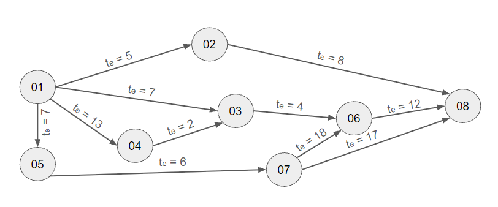

| EVENTOS # | SOMA DOS te’s | TE |
|---|---|---|
| 1 | 0 | 0 |
| 2 | 5 | 5 |
| 3 | 5 + 1 | 6 |
| 4 | 5 + 6 | 11 |
| 5 | 10 | 10 |
| 6 | 10 + 7 | 17 |
| 7 | 6 + 12 | 18 |
| 8 | 10 + 7 + 6 | 23 |
Calcule os Te’s para esta rede PERT:

(TE)1 = 0 (TE)4 = (TE)7 = (TE)2 = (TE)5 = (TE)8 = (TE)3 = (TE)6 =Vire para a página 79 para verificar a solução.